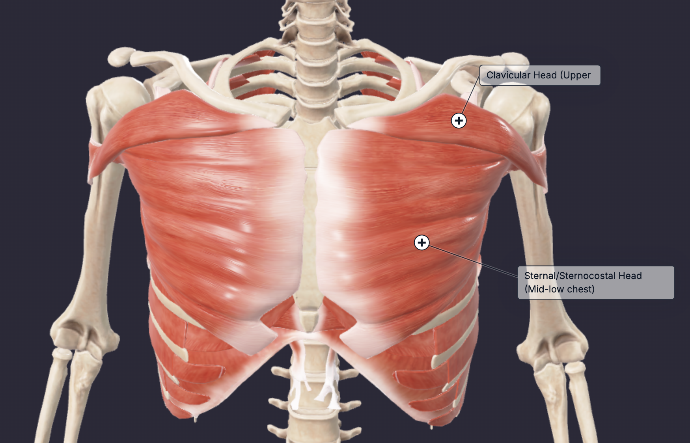

The pectoralis major, also known as the chest, is the largest muscle of the anterior chest wall. The chest contains two main heads, the clavicular head (upper chest) and the sternal head (mid-low chest). The main function of the chest is flexion, adduction, and medial rotation of the arm at the glenohumeral joint (main joint of the shoulder). The clavicular head primarily functions to flex the humerus, which is lifting the arm forward and upward. While the sternal head’s main function is to adduct, medially rotate, and extend the humerus. Thus the sternal head pulls the arms towards the body and rotates the humerus inward.
It is in your best interest to do two chest exercises, one for the clavicular head and one for the sternal head.
Pick one exercise from each list and do 2-3 sets based on your preference.
